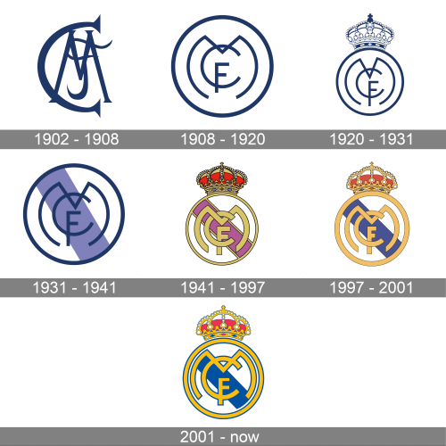
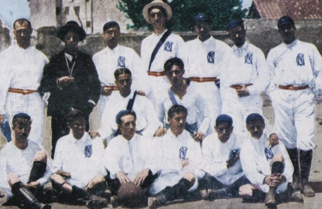

Informácie + História
Real Madrid, je profesionálny futbalový klub nachádzajúci sa v Madride v Španielsku. . Klub hrá domáce zápasy na štadióne Santiago Bernabéu s kapacitou 81 044 od roku 1947. Aktuálny tréner Realu Madridu je Carlo Ancelotti
Real Madrid má veľa dlhodobých rivalov, medzi ktorými sú najznámejší FC Barcelona, známe ako "El Clásico" , spoločne s Atléticom Madrid v takzvanom "El Derbi"
Klub bol založený 6. marca 1902 ako Madrid Football Club, a už od začiatku nosil na domáce zápasy biele dresy. Slovo Real je po slovensky Kráľovský, toto udelenie dostal klub od kráľa Alfonza XIII v roku 1920 spolu s kráľovskou korunou na znaku Futbal doviedli do Madridu profesori a študenti Institución Libre de Enseñanza. V roku 1895 založili futbalový klub Football Sky, ktorý hral každé nedeľné ráno v Moncloe. V roku 1900 sa tento klub rozpadol na dva rôzne kluby New Foot-Ball de Madrid a Club Español de Madrid. Prezidentom týchto klubov bol Julián Palacios. V roku 1902 sa tieto kluby znovu zjednotili a nový klub niesol názov Sociedad Madrid Foot-ball Club. Prezidentom znovuspojeného klubu bol Juan Padrós Rubió, prvým sekretárom bol Manuel Medía a prvým klubovým pokladníkom bol José de Gorostizaga. V roku 1905, iba tri roky po založení, už Sociedad Madrid Foot-ball Club vyhral prvý pohár Copa del Rey. V roku 1920 Alfonz XIII udelil tímu možnosť nosiť v názve slovo Real čo znamená kráľovský, odvtedy je názov tímu Real Madrid C.F. Klub Real Madrid má od roku 1930 aj svoj rezervný tím Real Madrid Castilla.

